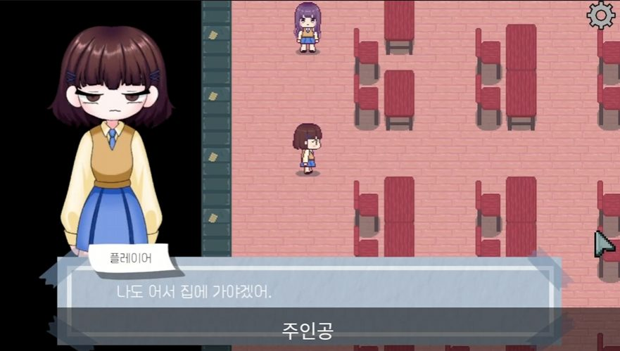

← 대표 프로젝트04 / CLUB · 2023.07—08
Dirty Guilty
QA 이슈 104건을 추적해 엔딩 8개를 완성했습니다.
한얼 동아리 1학년 10명이 만든 스토리형 공포 게임입니다.
프로그래머(TD)로 참여했고, QA 이슈 중 64건을 맡았습니다.
- 팀 규모
- 10명
- 개발 기간
- 5주 + 1주
- QA 이슈
- 104건 · 92건 완료

▶Dirty Guilty 트레일러 ↗01 / PLAN
파트별 작업을 WBS로 나눴습니다.
기획 1명, 그래픽 6명, 프로그래머 3명이 작업 항목마다 담당자와 예상 시간을 적은 WBS 계획표로 움직였습니다.
WEEK 01—05본 개발
반복되는 하루, 분기 8개 엔딩, 60분 내외 플레이
WEEK 06추가 개발 · QA
아이템·인벤토리, 버그 수정, QA
기획
시나리오, 분기·엔딩 시스템 기획, 다이얼로그 작성
그래픽
배경 러프에서 도트까지, 캐릭터·아이템 도트, 엔딩 일러스트
프로그래밍 · 본인
이동·카메라, 다이얼로그 시스템, 키 변경 UI, 게임오버 타임라인·시네머신
02 / QA
이슈마다 재현 경로와 우선순위를 남겼습니다.
기록 형식
담당자·문제·재현 경로·우선순위(필수·높음·낮음)·상태를 한 줄에 남기고, 비고란으로 되묻고 답했습니다.
처리 결과
104건 중 92건을 완료했습니다. 본인이 맡은 64건 중 55건을 처리했습니다.
판단이 필요한 건
기획에 없던 동작은 대사를 고치거나 처음부터 열어 두는 쪽으로 정리했고, 진엔딩 이후 흐름처럼 정하기 어려운 건은 회의 안건으로 넘겼습니다.
03 / FEEDBACK
현업 개발자에게 피드백을 받았습니다.
KOG 현업 피드백에서 예외적인 플레이 흐름 처리, 키보드·마우스 조작 통일, 하교 시 날짜 전환 연출, 배경 디테일 네 가지 개선점을 받았습니다.
WBS 계획표QA 시트 104건그래픽용 Unity 사용 가이드
작업 기록 ＋
팀 드라이브에 남은 문서를 요약했습니다.
- 07.10—08.13 · 개발
- 5주 본 개발, 이후 1주 추가 개발·QA 계획
- 07.16 · 가이드
- 그래픽 팀원용 Unity 사용법 문서 작성
- 전체 계획표 · WBS
- 그래픽·기획·프로그래밍 항목별 담당자와 예상 시간
- QA 시트
- 104건 · 92건 완료 · 본인 담당 64건 중 55건 완료
- KOG 피드백
- 현업 개발자의 개선점 4가지
팀원 실명이 담긴 원본 시트는 게시하지 않습니다.